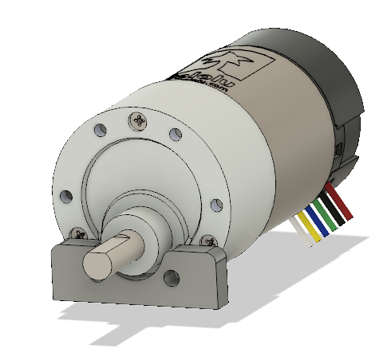

-
Download the STEP files for the motor.
-
https://www.pololu.com/file/0J1868/37d-gearmotor-3d-models.zip
-
Un-zip the file
37d-gearmotor-19-30-encoder.step
-
-
In Fusion 360, click File > Open, in the prompt click "Open from my computer…"
-
Select the STEP file that you saved earlier.
-
The model will be opened, save the model so it can be used with Fusion 360.
-
Create a new file for the assembly.
-
Assemble the motor and the motor mount together.
How the assembly should look:

Below is a video guide on how assemblies work: